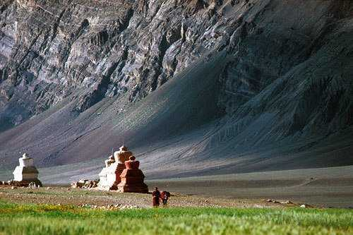

The most popular tourist attraction in Ladakh, Pangong lake is an endorheic (landlocked) lake situated at 4350 meters. The lake does not remain blue throughout the year or even the day, rather it changes colours from azure to light blue to green and grey too! It is famous amongst tourists as Ladakh lake, the spot where the Bollywood movie "3 Idiots" was shot.
Nubra Valley lies in the union territory of Jammu & Kashmir, at a distance of around 140 Km from Leh. With arid mountains in the backdrop, it is famous for the Bactrian camel rides, orchards and monasteries. Surrounded by snow-dusted Himalayan mountains, it can be reached via Khardung La.

The Leh Palace, also known as 'Lhachen Palkhar,' is a 17th-century former royal palace and one of the central attractions in Leh. Built under the patronage of by King Sengge Namgyal, it used to house his family. The nine-storey dun-coloured palace now houses a museum and a prayer room, while the highlight is the sweeping view of Leh and the surrounding Zanskar mountain from the rooftop.

Nesting pretty at an altitude of 14000 feet above sea level, you have to take the Leh-Kargil-Baltic National Highway to reach the destination. Found at a distance of 30 km from the scenic town of Leh the magnetic hill is girdled by the Sindhu river on its eastern side and cradled in a picturesque backdrop of the Himalayan Range.
The Shanti Stupa in Leh is a magnificent white-domed Buddhist monument located atop a steep hilltop at a dizzying height of 11,841 feet. It is a religious place for the Buddhists as it holds the relics of Buddha, consecrated by the 14th Dalai Lama. It is also popular amongst tourists as it offers a sweeping view of Leh and the nearby Changspa village.
Thiksey Monastery is a tibetan-style monastery located 20km south of Leh, on Leh Manali highway. The twelve-storey monastery is located on top of a hill, giving magnificent views of the town and the Indus valley below. The main highlight of Thiksey is the Maitreya Temple which houses a 15-metre high Maitreya Buddha statue.

Located at approximately 4 km from the main city, this glorified museum was built in memory of the brave soldiers who lost their lives fighting for India at the Indo-Pakistan war. Maintained by the Indian Army, the Hall of Fame showcases seized arms and amenities of Pakistani Army, pictures and biographies of brave soldiers.
Hemis Monastery is a Buddhist monastery located 45 kms south of Leh. Built by the Ladakhi king Sengge Namgyal, it is ranked as one of the wealthiest monasteries in India. Hemis Monastery is most visited during the annual Hemis Festival, held every year in early June.

Kargil lies near the Line of Control facing Pakistan-administered Kashmir's Baltistan to the west, and Kashmir valley to the south. Zanskar is part of Kargil district along with Suru, Wakha and Dras valleys. Kargil was at the center of a conflict between India and Pakistan in 1999.

The Changthang Wildlife Sanctuary is located at an altitude of about 4000-9000 feet in the Ladakhi Changthang Plateau. The vast range of exotic flora and fauna attribute the sanctuary to be the second-largest nature reserve. It houses the three popular high altitude lakes - Tso Moriri, Pangong Lake and Tso Kar.
The Chumathang Hot Spring is a hot sulphur spring situated in a small hamlet along the Indus River called Chumathang about 138 km from Leh, Ladakh. The spring originates quite close to the river itself and is believed to have medicinal properties. Many believe that the mineral-rich water can cure one of skin diseases.
The Maitreya Buddha statue in Nubra Valley is a towering symbol of peace and compassion, standing at an impressive height of over 32 meters (approximately 106 feet). Located near the Diskit Monastery, this majestic statue is one of the tallest representations of Maitreya Buddha in the world and serves as a prominent landmark in the region.